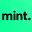

Automint
No internet connection
Settings
Notifications
Desktop push notifications
Spell check
Check spelling in text fields
Minimize to tray
Keep running when window is closed
Start on boot
Launch Automint when you log in
Share usage data
Share anonymous usage statistics to help improve Automint. No personal data is collected.
Privacy
Reload
Clear Session
Version
—
Commit
—
Built
—
Clear Session
Clear all session data? You will be logged out.
Cancel
Clear
Incoming link